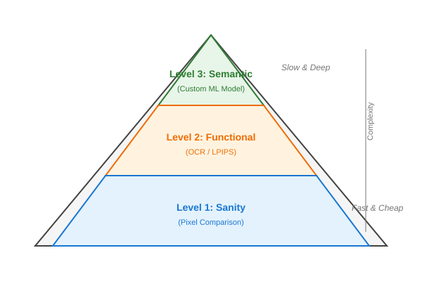
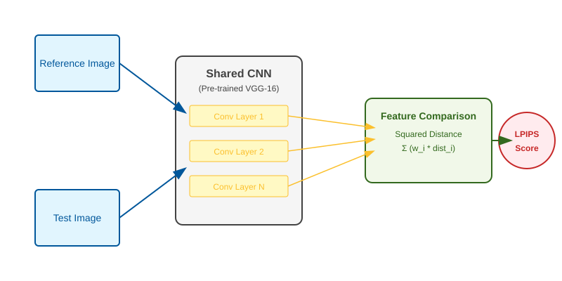

CI/CD Render Validation
You’ve finally finished your Vulkan renderer. It looks beautiful on your high-end development machine. You’ve got the lighting just right, the textures are crisp, and the frame rate is smooth. But then you push your code, and the Continuous Integration (CI) pipeline fails. Or worse, it passes, but a colleague pulls your branch and sees nothing but a black screen because of a subtle driver difference you didn’t account for.
How do we actually know our renderer is working correctly across different hardware and drivers? Traditional unit tests can’t see your screen. Pixel-by-pixel comparisons are notoriously fragile—a single-pixel shift or a tiny color variation in a different driver can trigger a false positive.
In this chapter, we’re going to build a smarter validation pipeline. We’ll move beyond simple "is this pixel identical?" tests and use the ML techniques we’ve learned to build a system that understands what it’s seeing.
Why Standard Testing Fails Graphics
If you’ve ever tried to write tests for a renderer, you’ve likely run into the "Gold Image" problem. You save a "perfect" screenshot and compare every future render against it. It works great until:
-
Resolution Drift: You change the UI scale, and suddenly every pixel is slightly different.
-
Driver Jitter: You update your GPU drivers, and the anti-aliasing implementation changes its sub-pixel sampling pattern.
-
Headless Mismatch: You run on a software renderer in CI (like SwiftShader), which might use different floating-point rounding for its rasterizer than your NVIDIA or AMD hardware.
Suddenly, you have thousands of "failing" tests that look identical to the human eye. This is called the Oracle Problem—it’s easy to see that an image is wrong, but it’s very hard to write a mathematical rule that defines "correctness" for every pixel.
To solve this, we need a hierarchy of validation that uses the right tool for the right job.
A Human-Centric Testing Hierarchy
Think of how a human tester would verify your app. They wouldn’t count every pixel. They’d ask:
-
Is there anything on the screen? (Sanity check)
-
Can I read the menus? (Functional validation)
-
Does the scene look "right"? (Semantic validation)
We’ll mirror this approach in our CI pipeline, moving from fast, cheap checks to more sophisticated ML analysis.

-
Level 1: The "Don’t Panic" Sanity Check. We’ll use high-tolerance pixel comparison and LPIPS to catch catastrophic failures (black screens, white screens, or static) in milliseconds.
-
Level 2: Reading the UI with OCR. We’ll use Optical Character Recognition to ensure your text isn’t just rendering, but is actually legible and contained within its boxes.
-
Level 3: Semantic Validation with ML. We’ll use a lightweight classifier—similar to what we built for MNIST and ImageNet—to detect specific rendering artifacts like Z-fighting, missing textures, or broken lighting.
By the end of this chapter, you’ll have a pipeline that doesn’t just check if your code compiles, but actually "sees" that your application is working correctly.
Setting the Stage: Headless Vulkan in CI
Before we can validate our renders, we need to be able to render without a monitor. GitHub Actions and other CI runners are essentially "headless" servers. They don’t have GPUs or displays.
To handle this, we’ll use a software renderer. This is a CPU-based implementation of the Vulkan API. While it’s too slow for gaming, it’s perfect for CI because it’s deterministic—it should produce the exact same results on every machine.
Getting the Tools
On a Linux-based CI runner, we’ll typically use SwiftShader (developed by Google) or LavaPipe (part of the Mesa project). SwiftShader is often preferred for its stability in restricted environments.
# Example GitHub Actions snippet
- name: Install Vulkan and SwiftShader
run: |
sudo apt-get update
sudo apt-get install -y vulkan-tools libvulkan-dev
# Download SwiftShader
wget https://github.com/google/swiftshader/releases/download/latest/swiftshader-linux-x64.tar.gz
tar xzf swiftshader-linux-x64.tar.gz
# Point Vulkan to the software renderer
echo "VK_ICD_FILENAMES=$PWD/swiftshader/vk_swiftshader_icd.json" >> $GITHUB_ENVWriting Code for a Headless World
In your main application, you usually create a VkSurfaceKHR to connect to a window. In CI, we skip the surface entirely and render directly to an "Offscreen Framebuffer".
Here’s how we adapt our HeadlessVulkanApp class to work without a window:
// Simplified HeadlessVulkanApp focusing on the offscreen setup
class HeadlessVulkanApp {
public:
HeadlessVulkanApp(uint32_t width, uint32_t height) : width_(width), height_(height) {
// Standard Vulkan setup (Instance, Device, etc.) omitted for brevity
setupVulkanHeadless();
createFramebuffer();
}
void createFramebuffer() {
// Create offscreen image (no swapchain needed)
vk::ImageCreateInfo imageInfo{
.imageType = vk::ImageType::e2D,
.format = vk::Format::eR8G8B8A8Unorm,
.extent = {width_, height_, 1},
.tiling = vk::ImageTiling::eLinear, // Linear for easy CPU readback
.usage = vk::ImageUsageFlagBits::eColorAttachment | vk::ImageUsageFlagBits::eTransferSrc,
// ...
};
framebufferImage_ = device_.createImage(imageInfo);
// Allocate and bind host-visible memory for direct CPU access
// (In a real app, you'd use a more efficient staging buffer approach)
auto memReqs = framebufferImage_.getMemoryRequirements();
allocateAndBindMemory(framebufferImage_, vk::MemoryPropertyFlagBits::eHostVisible);
}
std::vector<uint8_t> readFramebuffer() {
void* mapped = framebufferMemory_.mapMemory(0, imageSize_);
std::vector<uint8_t> pixels(imageSize_);
std::memcpy(pixels.data(), mapped, imageSize_);
framebufferMemory_.unmapMemory();
return pixels;
}
// ... rendering and boilerplate omitted ...
};This creates a Vulkan context without any window system, renders to an offscreen image, and provides readback for validation. You can find the full implementation, including the standard instance and device creation, in the ci_render_validation.cpp attachment.
Level 1: Seeing the Big Picture with LPIPS
Before we get into the weeds of validating specific UI elements or textures, we need a way to answer a simple question: "Does this look like the same application?"
If you’ve done any graphics work, you know that a simple Mean Squared Error (MSE) comparison is a nightmare. If your cube rotates just a tiny bit differently because of a timing fluke, or if a driver uses a slightly different anti-aliasing kernel, your MSE will skyrocket even though the images look identical to you.
The Perceptual Difference
Traditional pixel comparison treats an image like a spreadsheet of numbers. If one number changes, the test fails.
LPIPS (Learned Perceptual Image Patch Similarity) treats an image like a human eye does. It uses a pre-trained neural network (like VGG or AlexNet) to extract features. It looks for "dog-ness," "edge-ness," and "texture-ness."
If the high-level features match, the images are perceptually similar, even if the pixels aren’t mathematically identical.

Why Feature Maps Beat Pixels
When an image passes through a CNN (as we learned in Chapter 2), each layer creates a Feature Map.
-
Early Layers: Capture edges and colors.
-
Mid Layers: Capture textures and shapes.
-
Deep Layers: Capture semantic objects.
LPIPS takes the feature maps from multiple layers of a pre-trained network for both the "Golden" image and the "Test" image. It then calculates the distance between these maps.
This distance is our similarity score.
-
: Perceptually identical.
-
: Minor variations (e.g., different anti-aliasing).
-
: Something is wrong (e.g., wrong texture, missing object).
Implementing LPIPS
We can run LPIPS using the same ONNX Runtime setup we used for our image classifier. We’ll feed it two images—our current render and a "golden" reference—and it will return a distance score. A score near 0 means they look the same; a score above 0.3 usually means something is seriously wrong.
class LPIPSValidator {
public:
// ... setup and ONNX session initialization ...
float computeSimilarity(const std::vector<uint8_t>& img1, const std::vector<uint8_t>& img2) {
// Preprocess: convert RGBA to RGB and normalize to [-1, 1]
auto tensor1 = preprocessImage(img1);
auto tensor2 = preprocessImage(img2);
// Run LPIPS ONNX model
auto outputs = session_.Run(Ort::RunOptions{nullptr}, inputNames, inputs.data(), 2, outputNames, 1);
// Return the perceptual distance (lower is more similar)
return outputs[0].GetTensorMutableData<float>()[0];
}
};
bool testSanityCheck() {
HeadlessVulkanApp app(800, 600);
auto pixels = app.readFramebuffer();
auto reference = loadReferenceImage("references/main_menu.png");
LPIPSValidator validator("models/lpips_vgg.onnx");
float lpips = validator.computeSimilarity(pixels, reference);
if (lpips > 0.15f) {
std::cerr << "Sanity check FAILED: LPIPS distance " << lpips << " > 0.15\n";
return false;
}
return true;
}Getting the LPIPS Model
Download a pre-trained LPIPS model in ONNX format:
# Option 1: Use pre-converted LPIPS-VGG model
wget https://github.com/richzhang/PerceptualSimilarity/releases/download/v0.1/lpips_vgg.onnx \
-O models/lpips_vgg.onnx
# Option 2: Convert from PyTorch yourself
python3 << 'EOF'
import torch
import lpips # pip install lpips
# Load pre-trained LPIPS model
model = lpips.LPIPS(net='vgg', version='0.1')
model.eval()
# Export to ONNX
dummy_img1 = torch.randn(1, 3, 224, 224)
dummy_img2 = torch.randn(1, 3, 224, 224)
torch.onnx.export(
model,
(dummy_img1, dummy_img2),
'models/lpips_vgg.onnx',
input_names=['input0', 'input1'],
output_names=['output'],
dynamic_axes={
'input0': {0: 'batch', 2: 'height', 3: 'width'},
'input1': {0: 'batch', 2: 'height', 3: 'width'}
}
)
print("LPIPS model exported to lpips_vgg.onnx")
EOFWhy LPIPS Over Simple Pixel Comparison
Traditional MSE fails:
Reference: Cube rotated 0°
Test: Cube rotated 1° (due to timing differences)
MSE: High - thousands of pixels differ
Human: Looks identical
Result: False positive failureLPIPS succeeds:
Reference: Cube rotated 0°
Test: Cube rotated 1°
LPIPS: 0.03 - features are nearly identical (shape, lighting, texture)
Human: Looks identical
Result: PassBoth catch real bugs:
Reference: Cube with brick texture
Test: Cube with checkerboard texture (wrong texture loaded)
MSE: High
LPIPS: 0.45 - features differ significantly (texture pattern changed)
Human: Obviously wrong
Result: Correctly failsPerformance Considerations
LPIPS is slower than pixel comparison (20-30ms vs 1ms) but still fast enough for CI:
-
Simple pixel check: 1-2ms (use for catastrophic failures like black screen)
-
LPIPS check: 20-30ms (use for perceptual similarity)
-
OCR text check: 100-200ms (use for text validation)
-
Full ML validation: 50-100ms (use for complex semantic checks)
You can combine both for optimal speed:
bool testSanityCheckOptimized() {
HeadlessVulkanApp app(800, 600);
auto pixels = app.readFramebuffer();
auto reference = loadReferenceImage("references/main_menu.png");
// Level 1a: Quick pixel check (< 1ms)
// Catches black screens or catastrophic corruption instantly
if (countDrasticDifferences(pixels, reference) > threshold) {
return false;
}
// Level 1b: LPIPS for perceptual similarity (~30ms)
LPIPSValidator validator("models/lpips_vgg.onnx");
return validator.computeSimilarity(pixels, reference) < 0.15f;
}This catches obvious failures in 1ms, then validates perceptual similarity in 30ms for a total of 31ms—acceptable for CI.
Level 2: Actually Reading the UI
Our LPIPS check told us the scene looks "roughly correct." But what if the "Submit" button is blank? Or what if the font rendering broke and the text is now just a row of tofu (missing character squares)? LPIPS might not catch that if the overall color and shape are similar.
To solve this, we’re going to use ML-based Optical Character Recognition (OCR).
The OCR Pipeline: Detection + Recognition
Instead of a single "black box," modern OCR is a two-stage process.
1. Text Detection (The "Where")
A model like EAST (Efficient and Accurate Scene Text detector) or CRAFT looks at the entire 1080p frame and outputs a list of bounding boxes where it "thinks" there is text. It doesn’t know what the text says yet; it just finds the "blobs."
2. Text Recognition (The "What")
We take those bounding boxes, crop them from the main image, and feed them into a second model, like CRNN (Convolutional Recurrent Neural Network).
-
CNN Part: Extracts visual features of the letters.
-
RNN Part: Understands the sequence (e.g., "S" followed by "u" followed by "b" …).
Finding the Boxes
In a Vulkan application, we usually know where a button should be based on our UI layout code. However, verifying that the text actually rendered inside that button is the goal. We first ask our detection model to find all "blobs" of text in the render.
struct TextMatch {
std::string text;
Rect bounds;
};
class OCRValidator {
public:
std::vector<TextMatch> detectAndRead(const std::vector<uint8_t>& pixels) {
// 1. Detect: Find all bounding boxes containing text
// (Using an ONNX model like EAST)
std::vector<Rect> boxes = textDetector_.findBoxes(pixels);
std::vector<TextMatch> results;
for (const auto& box : boxes) {
// 2. Recognize: Convert the pixels in this box to a string
// (Using an ONNX model like CRNN)
auto cropped = cropPixels(pixels, box);
std::string text = textRecognizer_.read(cropped);
results.push_back({text, box});
}
return results;
}
};Validating the Layout (Text Fitting)
Now for the critical check: does the text fit? A common bug in UI development is text "overflowing" its container, especially when localizing to longer languages (like German) or using a different font.
We validate this by comparing the Detected Bounding Box (where the pixels actually appeared) against the Expected UI Box (the designated area in your layout).
bool validateTextFitting(const TextMatch& detected, const Rect& expectedUIBox) {
// Check if the detected text is entirely contained within the expected box
bool isInside = expectedUIBox.contains(detected.bounds);
// Check for "legibility margin" - text shouldn't be touching the very edge.
// We expect at least a 2-pixel gap on all sides.
bool hasMargin = expectedUIBox.width > (detected.bounds.width + 4) &&
expectedUIBox.height > (detected.bounds.height + 4);
return isInside && hasMargin;
}This approach is much more powerful than just checking if a button exists. It verifies:
-
Semantic Content: The text says "Submit", not "Error" or "???"
-
Layout Integrity: The text is centered and contained (not clipped by the button edge).
-
Legibility: If the ML model can’t read it, your users likely can’t either.
By using our own ONNX-based inference, we keep our CI pipeline self-contained and focused on ML principles.
Level 3: Semantic Validation (The "Sense of Sight")
Finally, we reach the most advanced level of our pipeline. Sometimes, a render is "correct" according to pixels and text, but it’s "wrong" semantically.
For example, imagine your shader has a bug that causes Z-fighting—that flickering effect where two surfaces are at the exact same depth. To a pixel comparator, it’s just some noise. To OCR, it’s irrelevant. But to a human, it’s an obvious bug.
Or consider a missing texture. The model renders, it’s the right shape, but it’s bright magenta.
To catch these, we train a custom, lightweight CNN. This isn’t a massive 1000-class classifier like MobileNet. It’s a specialist. You train it on a few hundred "good" renders and "bad" renders from your own application. It learns what your specific game or app should look like.
Building the Specialist
Because this model only needs to know about your application, it can be tiny—just a few layers. This makes it incredibly fast to run in CI.
# Simpler, faster model than before - just needs to detect "broken" vs "correct"
import torch
import torch.nn as nn
class FastRenderValidator(nn.Module):
def __init__(self):
super().__init__()
# Lightweight architecture - only 3 conv layers
self.features = nn.Sequential(
nn.Conv2d(3, 32, 5, stride=2, padding=2), # 800x600 -> 400x300
nn.ReLU(),
nn.MaxPool2d(2), # 400x300 -> 200x150
nn.Conv2d(32, 64, 3, padding=1),
nn.ReLU(),
nn.MaxPool2d(2), # 200x150 -> 100x75
nn.Conv2d(64, 64, 3, padding=1),
nn.ReLU(),
nn.AdaptiveAvgPool2d((8, 8)), # 100x75 -> 8x8
)
self.classifier = nn.Sequential(
nn.Flatten(),
nn.Linear(64 * 8 * 8, 128),
nn.ReLU(),
nn.Dropout(0.3),
nn.Linear(128, 2) # Binary: correct=0, broken=1
)
def forward(self, x):
x = self.features(x)
x = self.classifier(x)
return xThis model is much smaller (500KB vs 50MB), runs in 20-30ms, and is specifically trained to detect your application’s rendering bugs.
Building a Living Dataset
A common mistake in ML engineering is thinking you need a "perfect" dataset before you start. In reality, the most robust validators are built iteratively. We advocate for a process called Bug Harvesting.
Instead of just guessing what might break, you train on the data you have. When a new bug is discovered—either by a human developer or an automated test—you capture that specific "Broken" state, add it to your training set, and retrain the model. Over time, your AI naturally gathers a library of the exact failures you want to prevent.
Stage 1: The "Cold Start" (Synthetic Induction)
When you’re first starting, you might not have a library of real bugs yet. To get the model off the ground, you can use Synthetic Induction. You script your Vulkan renderer to intentionally create "bad" data:
-
Z-Fighting: Force two overlapping planes to have the exact same
zcoordinate in your vertex shader. -
Missing Textures: Bind a 1×1 bright magenta texture instead of the real asset.
-
Shader Corruption: Inject a small snippet of code into your
.slangor.glslshaders that randomly flips colors or zeroes out light contributions. -
Culling Issues: Disable backface culling where it should be enabled to create "see-through" geometry.
This gives your model a "baseline" understanding of what "broken" looks like. Since the geometry is still technically correct, simple pixel tests might miss these, but a CNN will quickly learn the high-frequency patterns of Z-fighting or the specific Hue of magenta error textures.
A Note on Overfitting
A common trap in CI validation is Overfitting to the Gold Image. If you only train your model on one specific camera angle, it will learn that any other angle is "broken."
To build a robust validator:
-
Vary the Camera: Randomize the view-projection matrix slightly during data harvesting.
-
Vary the Lighting: Change the sun position or light intensity.
-
Use Data Augmentation: As learned in Chapter 2, apply random crops and noise to your training samples.
Your goal is to train a model that understands the concept of a "working render" for your specific application, not a model that just memorizes a specific screenshot.
Training and Exporting
With our dataset in hand, training the FastRenderValidator is a standard PyTorch task. Because the task is binary (Broken vs. Correct) and the domain is narrow, it typically converges in under 10 minutes.
# Simple training loop snippet
optimizer = torch.optim.Adam(model.parameters(), lr=0.001)
criterion = nn.CrossEntropyLoss()
for epoch in range(10):
for images, labels in dataloader:
optimizer.zero_grad()
outputs = model(images)
loss = criterion(outputs, labels)
loss.backward()
optimizer.step()
# Export to ONNX for CI use
dummy_input = torch.randn(1, 3, 224, 224)
torch.onnx.export(model, dummy_input, "models/semantic_validator.onnx",
input_names=['input'], output_names=['output'])Integrating the Specialist into C++
Once exported, we use our ONNX inference engine to run the semantic check. In our CI pipeline, we call this after the fast sanity and OCR checks have passed.
class SemanticValidator {
public:
SemanticValidator(const std::string& modelPath) : session_(env_, modelPath.c_str(), options_) {}
bool isRenderCorrect(const std::vector<uint8_t>& pixels) {
// 1. Preprocess: resize to 224x224 and normalize
std::vector<float> input = preprocess(pixels);
// 2. Run inference
auto outputTensors = session_.Run(Ort::RunOptions{nullptr}, ...);
// 3. Interpret results: Argmax of [correct_score, broken_score]
float* results = outputTensors[0].GetTensorMutableData<float>();
return results[0] > results[1]; // Index 0 is 'Correct'
}
};Complete CI Test Pipeline
Put it all together:
int main() {
try {
std::cout << "=== Vulkan Render Validation ===\n\n";
// Level 1: Fast sanity check (1-2ms)
std::cout << "Running sanity check...\n";
if (!testSanityCheck()) {
std::cerr << "FAILED: Sanity check - render is completely broken\n";
return 1;
}
std::cout << "PASSED: Sanity check\n\n";
// Level 2: Text validation (100-200ms)
std::cout << "Running text validation...\n";
if (!testUITextValidation()) {
std::cerr << "FAILED: Text validation - UI text incorrect or clipped\n";
return 1;
}
std::cout << "PASSED: Text validation\n\n";
// Level 3: ML semantic validation (50-100ms)
std::cout << "Running semantic validation...\n";
if (!testSemanticCorrectness()) {
std::cerr << "FAILED: Semantic validation - rendering anomaly detected\n";
return 1;
}
std::cout << "PASSED: Semantic validation\n\n";
std::cout << "=== All tests PASSED ===\n";
return 0;
} catch (const std::exception& e) {
std::cerr << "ERROR: " << e.what() << "\n";
return 1;
}
}GitHub Actions workflow:
- name: Run render validation tests
run: |
cd build
# Run with SwiftShader
./render_validation_tests
# If tests generated diff images, upload as artifacts
if [ -d test_output ]; then
echo "Test failures detected - check artifacts"
fi
- name: Upload test artifacts on failure
if: failure()
uses: actions/upload-artifact@v3
with:
name: render-test-failures
path: build/test_output/Summary
Practical CI/CD render validation uses three complementary approaches:
Fast pixel comparison: Catches catastrophic failures in milliseconds with tolerance for minor driver differences.
OCR-based text validation: Actually reads UI text using specialized ML models (Detection + Recognition), verifies content matches expectations and fits within boxes without clipping.
ML semantic validation: Lightweight classifiers detect specific rendering issues when pixel comparison is too fragile.
Headless Vulkan setup: Works in GitHub Actions with SwiftShader or LavaPipe software renderers, no GPU required.
This combination provides robust testing: fast checks fail fast, text validation ensures readable UI, and ML validation catches semantic rendering issues across different environments.